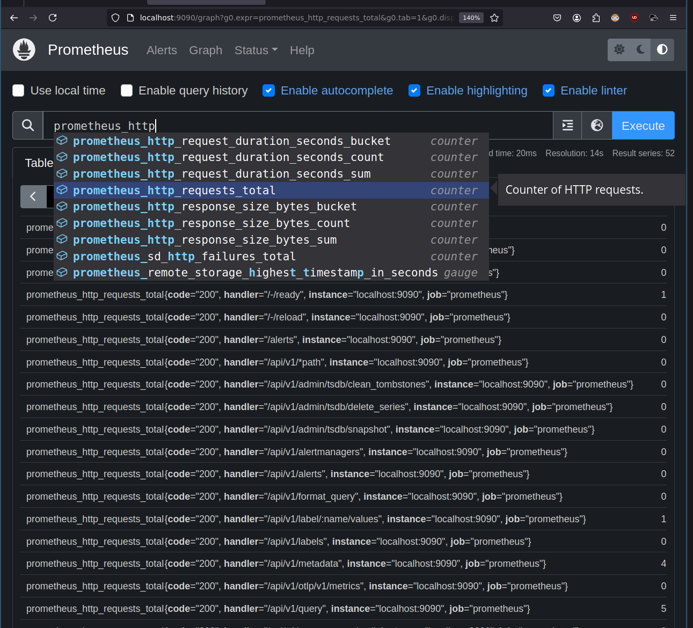
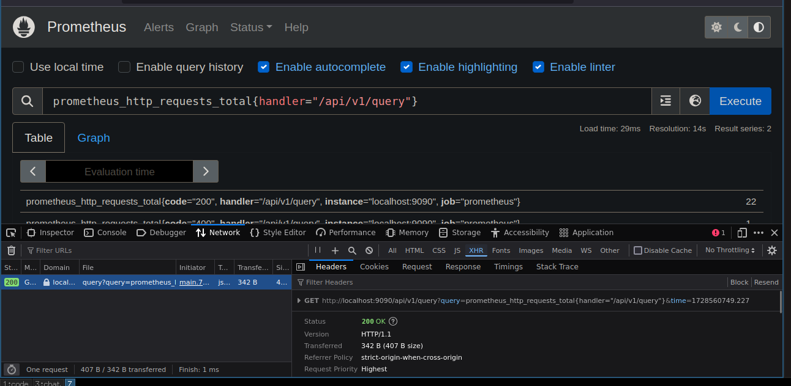
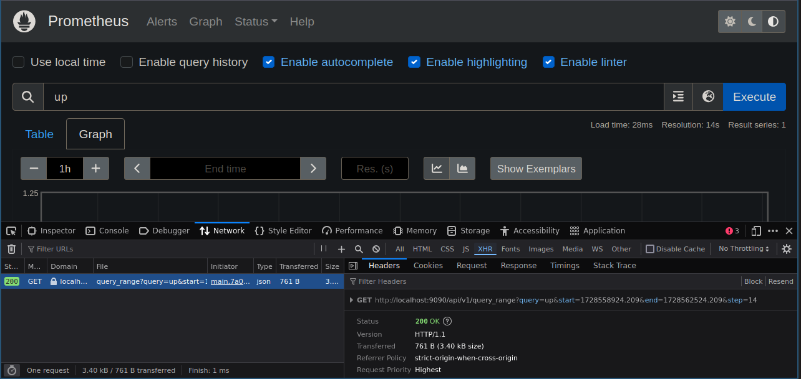

Căn bản không nghĩa là đơn giản hay dễ. Điều này càng đúng khi nói về time series database (TSDB) như Prometheus. Time series là 1 nhánh của toán học, mà chỉ có 1 thứ dễ khi nói về toán, đó là dễ sai. Thời gian là 1 khái niệm không được định nghĩa rõ ràng, chỉ có trong trí tưởng tượng của con người https://en.wikipedia.org/wiki/Time.
Chú ý: vì vậy bài viết này, giống mọi bài viết khác, có thể sai.
Bài viết giúp trả lời các câu hỏi:
- Time series là gì
- Metric và label là gì
- Các kiểu metric
- Các kiểu dữ liệu trong PromQL
- Instant vector khác gì range vector
- Instant vector selector khác gì range vector selector
- Instant query khác gì range query
- Operator khác gì function [bài sau]
Cài và chạy Prometheus
Xem bài trước.
Các khái niệm trong Prometheus
Data model - Timeseries
Prometheus fundamentally stores all data as time series: streams of timestamped values belonging to the same metric and the same set of labeled dimensions.
Prometheus chứa tất cả dữ liệu như các time series (chuỗi thời gian). Time series: một chuỗi giá trị gắn liền thời gian thuộc về cùng 1 metric và cùng label.
Ví dụ:
2 @1726148884.177
19 @1726148899.177
value có kiểu float 64 bits, timestamp được tính bằng giây từ mốc Unix Epoch 1/1/1970, với phần milli giây sau dấu .. Kí hiệu @ dùng khi hiển thị ở giao diện, để dễ phân biệt đó là phần timestamp.

Sample
Một cặp (value, timestamp) gọi là 1 sample.
Metric names
Metric name là tên dùng để đại diện cho thứ được đo
Ví dụ: prometheus_http_requests_total
Metric label
Kèm với metric name, có thể dùng các cặp key-value gọi là label, mỗi label tạo thành 1 chiều (dimension) để chứa các thuộc tính khác của 1 metric.
Ví dụ:
prometheus_http_requests_total{code="200"} 10
prometheus_http_requests_total{code="500"} 2
Cú pháp:
<metric name>{<label name>=<label value>, <label name2>=<label value2>, ...}
Metric name kết hợp với đầy đủ label xác định 1 time series cụ thể.
Metric name thực chất cũng là 1 label (__name__), vậy nên có thể nói dùng labelset (tập các label) để xác định 1 time series cụ thể.
Các kiểu metric
Có 4 kiểu metric:
- Counter: counter để đếm, mỗi lần chỉ có thể giữ nguyên hay tăng lên 1 đơn vị, hoặc reset về 0. Ví dụ: đếm (tổng) số lượt truy cập website, (tổng) số lỗi xảy ra...
- Gauge: /ɡeɪdʒ/ để đo các giá trị có thể tăng giảm tùy ý, ví dụ %CPU, %RAM.
- Histogram: đếm các giá trị trong các khoảng chia trước (gọi là bucket). Ví dụ chia latency truy cập vào website thành các mốc 0.1s 0.2s 0.3s 0.45s, histogram metric đếm số giá trị trong các khoảng le (lower or equal) {le="0.1"} tức từ 0 đến 0.1 [0,0.1], {le=",0.2"} tức [0,0.2], {le="0.3"} tức [0,0.3], {le="0.45"} [0,0.45] và {le="+inf} [0,+inf]. Khi 1 request có latency là 0.33, các bucket {le="0.45"} và {le="+inf"} sẽ có giá trị tăng thêm 1.
- Summary: do tác giả bài viết chưa dùng bao giờ nên bạn đọc vui lòng xem tài liệu.
Xem thêm giải thích + hình minh họa tại https://prometheus.io/docs/tutorials/understanding_metric_types/
Các kiểu dữ liệu trong PromQL
Prometheus Server > Querying > Basic https://prometheus.io/docs/prometheus/latest/querying/basics/ viết
Prometheus provides a functional query language called PromQL (Prometheus Query Language) that lets the user select and aggregate time series data in real time.
Prometheus sử dụng 1 ngôn ngữ query tên là PromQL (Prometheus Query Language). PromQL có 4 kiểu dữ liệu (data type):
- Instant vector - a set of time series containing a single sample for each time series, all sharing the same timestamp
- Range vector - a set of time series containing a range of data points over time for each time series
- Scalar - a simple numeric floating point value
- String - a simple string value; currently unused
Instant vector
Instant vector là 1 tập các time series, mỗi time series chứa 1 sample, tất cả đều có cùng timestamp. Ví dụ prometheus_http_requests_total trả về 1 instant vector, chứa 2 timeseries:
prometheus_http_requests_total{code="200"} 10
prometheus_http_requests_total{code="500"} 2
Range vector
Range vector (còn gọi là Matrix): là 1 tập các time series, mỗi time series chứa một khoảng các sample.
Code https://github.com/prometheus/prometheus/blob/v2.53.0/promql/value.go#L31-L34
func (Matrix) Type() parser.ValueType { return parser.ValueTypeMatrix }
func (Vector) Type() parser.ValueType { return parser.ValueTypeVector }
func (Scalar) Type() parser.ValueType { return parser.ValueTypeScalar }
func (String) Type() parser.ValueType { return parser.ValueTypeString }
// Series is a stream of data points belonging to a metric.
type Series struct {
Metric labels.Labels `json:"metric"`
Floats []FPoint `json:"values,omitempty"`
Histograms []HPoint `json:"histograms,omitempty"`
}
// Vector is basically only an alias for []Sample, but the contract is that
// in a Vector, all Samples have the same timestamp.
type Vector []Sample
// Matrix is a slice of Series that implements sort.Interface and
// has a String method.
type Matrix []Series
Khi nói tới Instant vector và Range vector là nói về kiểu dữ liệu (data type).
Time series selectors
Cú pháp để chọn các time series, gồm 2 loại là instant vector selector và range vector selector:
instant vector selectors
Instant vector selectors allow the selection of a set of time series and a single sample value for each at a given timestamp (point in time).
Instant vector selector chọn 1 tập các time series, mỗi time series 1 sample tại timestamp được chọn. Ví dụ 4 instant vector selector:
prometheus_http_requests_total
prometheus_http_requests_total{code="200"}
prometheus_http_requests_total{code!="200"}
prometheus_http_requests_total{code="200", handler="/api/v1/query"}
Có thể dùng regex để chọn label value
prometheus_http_requests_total{code=~".+00", handler=~"/api/v1/query.*"}
Kết quả:
prometheus_http_requests_total{code="200", handler="/api/v1/query", instance="localhost:9090", job="prometheus"} 7
prometheus_http_requests_total{code="200", handler="/api/v1/query_exemplars", instance="localhost:9090", job="prometheus"} 0
prometheus_http_requests_total{code="200", handler="/api/v1/query_range", instance="localhost:9090", job="prometheus"} 0
prometheus_http_requests_total{code="400", handler="/api/v1/query", instance="localhost:9090", job="prometheus"} 4
Tên metric là 1 label đặc biệt __name__:
{__name__=~"prometheus_http_requests.*", code=~".+00", handler=~"/api/v1/query.*"}
cũng cho kết quả như bên trên.
range vector selectors
Range vector literals work like instant vector literals, except that they select a range of samples back from the current instant.
Range vector selector hoạt động giống instant vector selector, ngoại trừ việc nó chọn 1 khoảng các sample từ thời điểm hiện tại về trước. Khoảng thời gian được viết sau metric name và label, đặt trong dấu [], có đơn vị s h m d w y. Ví dụ:
prometheus_http_requests_total{handler="/api/v1/query"}[1m]
trả về:
prometheus_http_requests_total{code="200", handler="/api/v1/query", instance="localhost:9090", job="prometheus"}
90 @1726745269.174
92 @1726745284.174
105 @1726745299.174
114 @1726745314.174
prometheus_http_requests_total{code="400", handler="/api/v1/query", instance="localhost:9090", job="prometheus"}
1 @1726745269.174
1 @1726745284.174
1 @1726745299.174
3 @1726745314.174
Có thể đổi time offset 1 tuần trước
prometheus_http_requests_total{handler="/api/v1/query"} offset 1w
Có thể chọn thời gian tính toán kết quả
prometheus_http_requests_total{handler="/api/v1/query"} @1726148884.174
Xem chi tiết tại https://prometheus.io/docs/prometheus/2.53/querying/basics/#offset-modifier
Instant query và range query
Instant query và range query là 2 API của Prometheus.
Instant query
The following endpoint evaluates an instant query at a single point in time:
GET /api/v1/query
POST /api/v1/query
API này trả về kết quả của PromQL query tại 1 thời điểm (mặc định là thời điểm hiện tại), xem ở dạng bảng (table):

The data section of the query result has the following format:
{ "resultType": "matrix" | "vector" | "scalar" | "string", "result":
}
Query dùng instant vector selector up trả về vector
$ curl 'http://localhost:9090/api/v1/query?query=up&time=1728562908.678'
{"status":"success","data":{"resultType":"vector","result":[{"metric":{"__name__":"up","instance":"localhost:9090","job":"prometheus"},"value":[1728562908.678,"1"]}]}}
Query dùng range vector selector up[1m] trả về matrix
$ curl 'http://localhost:9090/api/v1/query?query=up%5B1m%5D&time=1728563140.405'
{"status":"success","data":{"resultType":"matrix","result":[{"metric":{"__name__":"up","instance":"localhost:9090","job":"prometheus"},"values":[[1728563087.296,"1"],[1728563102.296,"1"],[1728563117.294,"1"],[1728563132.297,"1"]]}]}}
Instant query thường được Prometheus dùng khi tính toán các rule để gửi alert.
Range query
The following endpoint evaluates an expression query over a range of time:
GET /api/v1/query_range
POST /api/v1/query_range
API này sẽ trả về kết quả của PromQL query tại 1 khoảng thời gian.
Nó chỉ nhận 2 loại kiểu dữ liệu là instant vector và scalar. Thử query up[1m] sẽ nhận được lỗi:
$ curl 'http://localhost:9090/api/v1/query_range?query=up%5B1m%5D&start=1728558788.318&end=1728562388.318&step=14'
{"status":"error","errorType":"bad_data","error":"invalid parameter \"query\": invalid expression type \"range vector\" for range query, must be Scalar or instant Vector"}
Range query giống như thực hiện instant query qua nhiều thời điểm khác nhau rồi gộp kết quả lại thành 1 matrix. Kết quả là mỗi time series sẽ có nhiều sample và có thể dùng vẽ đồ thị.

Range query chủ yếu dùng để vẽ đồ thị (graph), phần mềm vẽ đồ thị như Grafana sẽ gọi qua API này.
Xem hình vẽ từ blog PromLab mô tả cách range query thực hiện:

Kết luận
Prometheus cơ bản thật không hề đơn giản.
Hết.
Tham khảo
- Site Reliability Engineering > Practical Alerting from Time-Series Data
- The Anatomy of a PromQL Query
- Range vector is matrix https://github.com/prometheus/prometheus/issues/2196
- Range query only support scalar-typed and instant-vector-typed expressions https://github.com/prometheus/prometheus/pull/15084/files